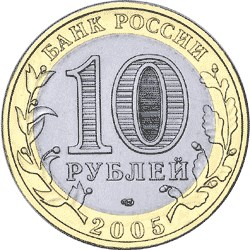

10 рублей — Казань
Серия: Древние города России


Характеристики
Каталожный номер: 5514-0025
Дата выпуска: 19.05.2005
Номинал: 10 рублей
Качество: АЦ
Металл: кольцо — латунь, диск — медь-никель
Диаметр: 27,0 мм
Тираж: 5 000 000 шт.
Описание аверса
В центре диска — обозначение достоинства «10 РУБЛЕЙ». Внутри цифры «0» — скрытые, видимые поочередно при изменении угла зрения изображения цифры «10» и надписи «РУБ». На кольце: «БАНК РОССИИ», год выпуска «2005», стилизованные ветви растений.
Описание реверса
Изображение панорамы города Казань на берегу реки, выше — герб города Казани; по окружности — надписи: «ДРЕВНИЕ ГОРОДА РОССИИ» и «КАЗАНЬ».
Гурт
300 рифлений и надпись «ДЕСЯТЬ РУБЛЕЙ», повторяющаяся дважды, разделённая звездочками.